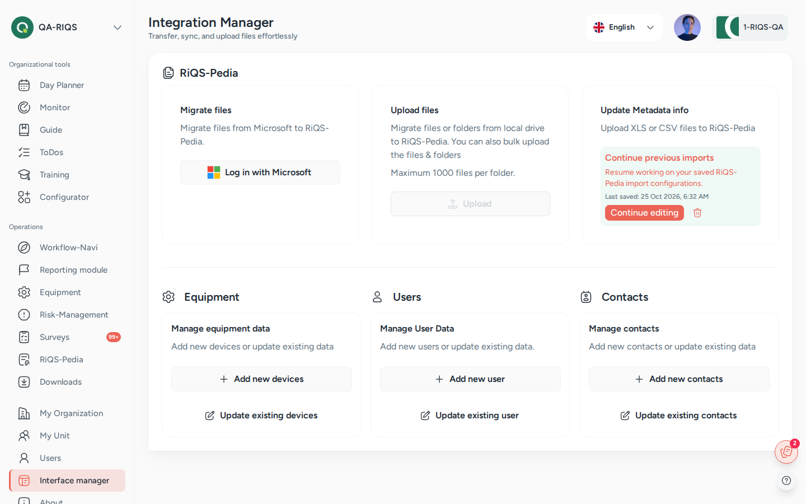

Interface Manager¶
In one sentence: The Interface Manager moves large amounts of existing data into RIQS in one go: documents into RiQS-Pedia, and equipment, users and suppliers through Excel templates. Menu: Interface manager (the page is titled Integration Manager) · Status: Live

Interface manager (page title Integration Manager): imports for RiQS-Pedia, equipment, users and contacts. Screens show test data.
What it is¶
When an organisation starts with RIQS, it usually already has a lot of data somewhere else: hundreds of documents on a shared drive or in SharePoint, a spreadsheet of devices, a list of staff. Typing all of that in by hand would take days. The Interface Manager is the "moving company" for this data.
It has two parts:
- My Documents: copy files and folders into RiQS-Pedia, either from Microsoft SharePoint / OneDrive or from your own computer. RIQS then helps you group the files into document versions and set their RiQS-Pedia settings (approval type, review interval, signature) before they go live.
- Data management: add or update equipment, users and suppliers in bulk. You download an Excel template, fill it in, upload it again, check the result in a preview table, and confirm.
Every import is first a draft. Nothing reaches the real modules until you click Complete migration. You can save a draft, leave, and continue later.
Key terms¶
| Term | Meaning |
|---|---|
| Migration | Copying data from outside into RIQS through the Interface Manager. |
| Template | An Excel file you download from the Interface Manager. It has the right columns for the data you want to import. |
| Draft / saved import | An import that is started but not completed. It is shown as Continue previous imports so you can resume it. |
| Version group | A set of files that are versions of the same document (for example "Hygiene plan v1" and "Hygiene plan v2"). In RiQS-Pedia they become one document with a version history. |
| File list (Excel) | An Excel file listing all uploaded documents. You can use it to rename documents and decide which files belong to the same version group. |
| Preview table / review table | The table shown after an upload. You check and complete the data here before you confirm. |
| Organisation level / unit level | Documents uploaded by an Administrator are organisation documents (versions 1.00, 2.00 …). Documents uploaded by a Power User are unit documents (versions 0.01, 0.02 …). |
Who uses it¶
| Role | What they typically do here |
|---|---|
| RiQS Administrator | Supports clients during onboarding; can do every import. |
| Group Administrator | Imports or updates data for the organisations of the group. |
| Administrator | Main user: moves the organisation's documents, devices, staff and suppliers into RIQS at the start. |
| Power User | Imports and updates data for the own unit. |
| Management | Imports and updates documents, equipment, users and contacts / suppliers, like the Power User. |
| Professional | No access. |
How it works¶
Documents (RiQS-Pedia migration)¶
Upload files → Prepare version grouping → Check version groups → Configure files → Complete migration
- Upload. Choose the source: Log in with Microsoft (SharePoint / OneDrive) or Upload from your computer (a whole folder, or single files).
- Prepare version grouping. RIQS proposes which files belong together. You can improve this with the file list in Excel, or Skip and group manually.
- Document version groups. Check the groups on screen. Move a file to another group, take it out of a group, change its version number or order. Then confirm.
- Configure. In the review table, set for each file (or many files at once) the folder, file type, approval type, review interval, signature settings and the original upload date and uploader.
- Complete migration. RIQS creates the documents in RiQS-Pedia.
Equipment, users and suppliers¶
Download template or current data → Fill in Excel → Upload → Complete the preview table → Complete migration
There are two actions for each kind of data:
| Kind of data | Add new | Update existing |
|---|---|---|
| Equipment | Add New Equipment: empty template | Update Existing Equipment: download of the current equipment data |
| Users | Add New User: empty template | Update Existing User: download of the current user data |
| Suppliers | Add New Supplier: empty template | Update Existing Supplier: download of the current supplier data |
After the upload, the preview table shows every row. Some details cannot come from Excel and are chosen in the table:
- Equipment: location, manufacturer, supplier and a RiQS-Pedia attachment. You can also enter the last maintenance or validation (responsible person and status). This becomes the Last Event in the Equipment module.
- Users: unit, role, language, qualifications and permits, and Configurator permissions. A unit that has used all its user licences is marked Unit is at full capacity.
- Suppliers: supplier category.
How to …¶
How to migrate documents from SharePoint or OneDrive¶
Who can do this: RiQS Administrator, Group Administrator, Administrator, Power User, Management 1. Open Interface manager. Make sure the right unit is selected. 2. In Migrate Files, click Log in with Microsoft and sign in with your Microsoft account. 3. Choose the site. Then tick the files and folders you want to copy. 4. Click Start migration and wait for the progress window to finish. 5. Continue with "How to group versions" below.
Result: The selected files are copied into the Interface Manager as a draft. They are not yet visible in RiQS-Pedia.
How to migrate documents from your computer¶
Who can do this: RiQS Administrator, Group Administrator, Administrator, Power User, Management 1. Open Interface manager and click Upload in the Upload Files card. 2. Choose Upload Folder (a whole folder, with its sub-folders) or Upload Files (one or more files). 3. Pick the folder or files and wait for the progress window. It shows the overall progress and the file being copied right now.
Result: The folder structure is kept. Files that cannot be migrated are listed with the reason (Why are … files being skipped?).
How to group versions with Excel¶
Who can do this: RiQS Administrator, Group Administrator, Administrator, Power User, Management 1. In Prepare version grouping, click Download file list. 2. In the File Lists sheet, use the same Normalised document name for all versions of one document. Put them in order with Version sequence (1, 2, 3 …). Use Proposed group to move a file into another group. You can also add a File note. 3. Save the file. Click Upload completed file. 4. Check the groups in Document version groups. Fix anything you need by hand. Then click the confirm button.
Result: The version groups are built again from your Excel file, and you move on to the review table.
Not using Excel? Click Skip and group manually and do the grouping on screen.
How to configure documents and complete the migration¶
Who can do this: RiQS Administrator, Group Administrator, Administrator, Power User, Management 1. In the review table, check each row. Use the row menu to change a single file. To change many files at once, select them and use the bulk update. 2. Set the Approval type (Standard, 4-Eye, 6-Eye), Interval duration, Re-Approval Process Duration, Signature type (SES, AES, QES) and, for QES, Authentication for QES (AutoIdent or VideoIdent). 3. If needed, change Upload date, Uploaded by and Uploader email so the original history is kept. 4. Click Save progress if you want to stop and continue later. 5. Click Complete migration and confirm.
Result: The documents appear in RiQS-Pedia with their versions, folders and settings.
How to add or update equipment, users or suppliers¶
Who can do this: RiQS Administrator, Group Administrator, Administrator, Power User, Management 1. Open Interface manager. In the Equipment Management, User or Suppliers column, click Add New … or Update Existing …. 2. Click Download Template (add) or Download … Data (update). Fill in or change the Excel file. 3. Upload the file in the same window. 4. Complete the missing details in the preview table. Use bulk update to set the same value for many rows. 5. Click Complete migration and confirm.
Result: The records appear in the Equipment module, in Users, or in the supplier list of the unit. They work exactly like records created by hand.
How to continue or delete a saved import¶
Who can do this: RiQS Administrator, Group Administrator, Administrator, Power User, Management 1. Open Interface manager. A saved import shows Continue previous imports with the date it was last saved. 2. Click it to go on where you stopped, or click Delete draft to throw the import away.
Result: When you delete a draft, its files and rows are discarded. Nothing moves into RIQS.
Rules to know¶
- Nothing is final until you complete it. Uploaded data stays in a draft until you click Complete migration.
- One document draft at a time. While a document import is saved as a draft, the Upload button is disabled. Continue or delete the draft first.
- Maximum 1,000 files per folder or per file selection when you upload from your computer.
- Unsupported files are never dropped silently. They are listed with a reason.
- Automatic grouping is careful:
- Files of different types (for example Word, Excel and PDF) are never grouped together.
- Only a version or status ending is ignored when names are compared (for example "v2", "2.0", "final", "draft", a date).
- An unclear ending is not grouped automatically.
- Templates stay separate. A file whose name ends with "template", "vorlage", "modèle", "modele" or "modello" is always its own group. It never becomes a version of a normal document.
- Version numbers depend on who imports.
- Administrator: organisation documents, versions 1.00, 2.00 …
- Power User: unit documents, versions 0.01, 0.02 …
- Upload date can only be a date in the past, with no time. You can change it for one file or for many at once.
- File type can only be changed for PDF files.
- Review interval and re-approval apply to all files you select in a bulk update.
- Users are updated by user ID. You cannot change a user's unit in an update import.
- Select a unit first. You cannot start a migration until a unit is selected.
- Who may import. Every role except Professional may use all Interface Manager actions. Professionals have no access.
Who can do what¶
| Action | RiQS Administrator | Group Administrator | Administrator | Power User | Management | Professional |
|---|---|---|---|---|---|---|
| Open the Interface Manager | ✅ | ✅ | ✅ | ✅ | ✅ | ❌ |
| Migrate files from SharePoint / OneDrive | ✅ | ✅ | ✅ | ✅ | ✅ | ❌ |
| Upload folders or files from the computer | ✅ | ✅ | ✅ | ✅ | ✅ | ❌ |
| Download the template to update document metadata | ✅ | ✅ | ✅ | ✅ | ✅ | ❌ |
| Upload the completed metadata template | ✅ | ✅ | ✅ | ✅ | ✅ | ❌ |
| Save a draft and continue a previous import | ✅ | ✅ | ✅ | ✅ | ✅ | ❌ |
| Add new equipment (template) | ✅ | ✅ | ✅ | ✅ | ✅ | ❌ |
| Update existing equipment | ✅ | ✅ | ✅ | ✅ | ✅ | ❌ |
| Add new users (template) | ✅ | ✅ | ✅ | ✅ | ✅ | ❌ |
| Update existing users | ✅ | ✅ | ✅ | ✅ | ✅ | ❌ |
| Add new suppliers / contacts (template) | ✅ | ✅ | ✅ | ✅ | ✅ | ❌ |
| Update existing suppliers / contacts | ✅ | ✅ | ✅ | ✅ | ✅ | ❌ |
Connected modules¶
- RiQS-Pedia: receives all migrated documents, with their version groups, folders and settings.
- Equipment: receives new and updated equipment, including the last maintenance or validation event.
- Users: receives new and updated users with their unit, role, language and qualifications. Unit licence limits apply.
- Organisation & units (supplier list of the unit): receives new and updated suppliers under their category.
- Tutorials and help: the Interface Manager has its own help videos and manual.
Open questions¶
- Suppliers or contacts? The current app shows Suppliers (add / update supplier data). The rights sheet and older feature lists say "Contacts". These docs follow the app. Are they the same thing?
- Approval status after migration. The feature list says migrated documents are approved automatically and skip the normal approval process. Please confirm this is still true in the current version.
- Google Drive. Older feature lists mention migration from Google Drive. The current start screen only offers Log in with Microsoft. Is Google Drive still offered, or was it dropped?
- Rights sheet vs feature list. The rights sheet gives Management (and every role except Professional) all Interface Manager actions. The feature list names only Administrator and Power User for migration and for adding equipment, users and suppliers, and Group Administrator, Administrator and Power User for bulk updates. These docs follow the rights sheet. Please confirm Management should have full access.
- Group Administrator and RiQS Administrator versions. It is not clear which version numbering (1.00 or 0.01) applies when these roles import documents.
Last reviewed: 2026-10-26